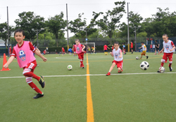

|
LOCKDOWN IS OVER & THE KIDS NEED EXERCISE.

What better way to get the kids off your hands for some well earned rest for you & much needed sports for the kids.
All 5-12 year olds are welcome to join our age-specific summer soccer camps at Yoyogi Futsal Courts. Let our English FA qualified, British coaches enthral, entertain and educate your young ones with their wealth of knowledge and lively, energetic characters. We encourage participants to enrol for the full 3 to 5 action-packed-days of football games and fun, but do accept players on a per-day basis*. All children will be presented with an official BFA certificate of achievement.
REGISTER ON-LINE HERE
* Please note that we will prioritise campers who sign up for the full camp, and accept per-day basis campers where spaces are available.
Please note, NOT ALL CAMPS ARE SAME LENGTH, TIME or VENUE & some August camps are still pending confirmation by the venue.
Dates, Venues & Prices per day:
CAMP 2.5 : July 20th (Mon) - 22nd (Wed) - 3 day camp @ Yoyogi Futsal Courts (MAP)
- Ages 5 ~ 8 (Bulldogs & Lions), Time: 11:00 am ~ 12:30 pm (90 mins) BFA Members: ¥5,000 Non BFA Members: ¥6,000
- Ages 9 ~ 12 (Academy & Stars), Time: 12:30 pm ~ 2:00 pm (90 mins) BFA Members: ¥5,000 Non BFA Members: ¥6,000
CAMP 3: July 27th (Mon) - 31st (Fri) - 5 day camp @ Yoyogi Futsal Courts (MAP)
- Ages 5 ~ 8 (Bulldogs & Lions), Time: 9:10 am ~ 10:50 am (100 mins) BFA Members: ¥5,000 Non BFA Members: ¥6,000
- Ages 9 ~ 12 (Academy & Stars), Time: 9:10 am ~ 11:50 am (2 hrs 40 mins) BFA Members: ¥7,000 Non BFA Members: ¥8,000
CAMP 4: August 3rd (Mon) - 5th (Wed) - 3 day camp @ Adidas Futsal Park, Shibuya Stream Bldg. (MAP)
- Ages 9 ~ 12 (Academy & Stars), Time: 10:00 am ~ 12:00 pm (2 hrs) BFA Members: ¥7,000 Non BFA Members: ¥8,000
CAMP 5: August 11th (Tue) - 14th (Fri) - 4 day camp
- Ages 5 ~ 8 (Bulldogs & Lions), 10:00 am ~ 11:30 am (90 mins) @ Adidas Futsal Park, Shibuya. (MAP)
BFA Members: ¥6,000 Non BFA Members: ¥7,000
- Ages 9 ~ 12 (Academy & Stars), Time: 9:00 am ~ 12:00 am (3 hours @ Yoyogi Futsal Courts (MAP)
BFA Members: ¥9,000 Non BFA Members: ¥10,000
CAMP 6:
- August 17th (Mon) - 19th (Wed) - 3 day camp @ Adidas Futsal Park, Shibuya. (MAP)
Ages 5 ~ 8 (Bulldogs & Lions), 10:00 am ~ 11:30 am (90 mins)
BFA Members: ¥6,000 Non BFA Members: ¥7,000
- August 17th (Mon) - 21st (Fri) - 5 day camp
Ages 9 ~ 12 (Academy & Stars), - To be confirmed July 21st
CAMP 7: August 24th (Mon) - 28th (Wed) - 5 day camp - To be confirmed July 28th

COVID-19 Safety measures
|
|
Our Safety measures:
All participants temperatures will be taken upon arrival at the venue
Hand sanitising gel will be available for participants to use before and after the session
Our coaches and children WILL NOT BE WEARING MASKS. The temperature & humidity in summer always causes concern for heat-stroke and breathing difficulties,this would be exacerbated by a mask and more cause for concern
Drills and games will be tailored to incorporate Social distancing by maximising the use of space and minimizing contact. We will make the coaching environment as safe as possible for both coaches & children.
Equipment will be cleaned & bibs (pinnies) washed after every session.
Registers of participants are always kept which can be used for tracking/tracing if necessary.
|
|
Safety measures we ask of our members:
We do ask that all of our members do adhere to strict hygiene practices to help minimise the risk of infection.
Please make sure that if your child is feeling unwell or has a raised temperature (above 37.5C) that you do not attend the class.
Have your children wash their hands on arrival and departure of the venue.
Please do not bring siblings who are not a BFA member if possible.
Unfortunately, due to number restrictions imposed by the venue, Parents/guardians will not be able to enter the grounds during the sessions.
When dropping-off/picking up we ask you to observe 'Social distancing' and preferably wear a mask - in high summer, wearing a mask may be difficult, so this is not mandatory.
Please continue to follow all prevention protocols for keeping you & your family safe and well.
|
Important information for participants:
- Please have your child wear something comfortable to play football.
- Please bring lots of sports drink, a hat, sun cream & a towel.
- Suitable shoes as per BFA guidelines
- Shin pads are mandatory
- In case of heavy rain: sessions will be cancelled- please note that we will not refund the fee.
- We will take photos at the camps which we will post on our FACEBOOK PAGE
ALL STUDENTS WILL RECEIVE AN OFFICIAL BRITISH FOOTBALL ACADEMY CERTIFICATE OF ACHIEVEMENT.
REGISTER ON-LINE HERE & GUARANTEE YOUR CHILD'S PLACE.
 Payment method: Please make all payments by bank transfer (furikomi) to: Payment method: Please make all payments by bank transfer (furikomi) to:
Bank Name: Bank of Mitsubishi-UFJ
Branch: Shibuya Branch (135)
Account Type: Regular account #3648175
Account Name: 'Footy Japan K.K.'
Cancellation Policy: for late cancellations the following fees will apply: up to 2 days prior to the camp week starting date = 100%; between 3~7 days prior to the starting date booked = 50%
Note 1: We may need to cancel the camp if we don't get enough participants, in which case we will refund your fee. We will email you 1 week before the camp starting date to inform you whether we go ahead with the camp or not.
Note 2: The sessions will go ahead in the light rain, but will be cancelled in case of lightning/storm/strong wind.
Note 3: We will not be able to refund the session fees or offer make up sessions in case of bad weather cancellation and/or for your own circumstances.
|
|